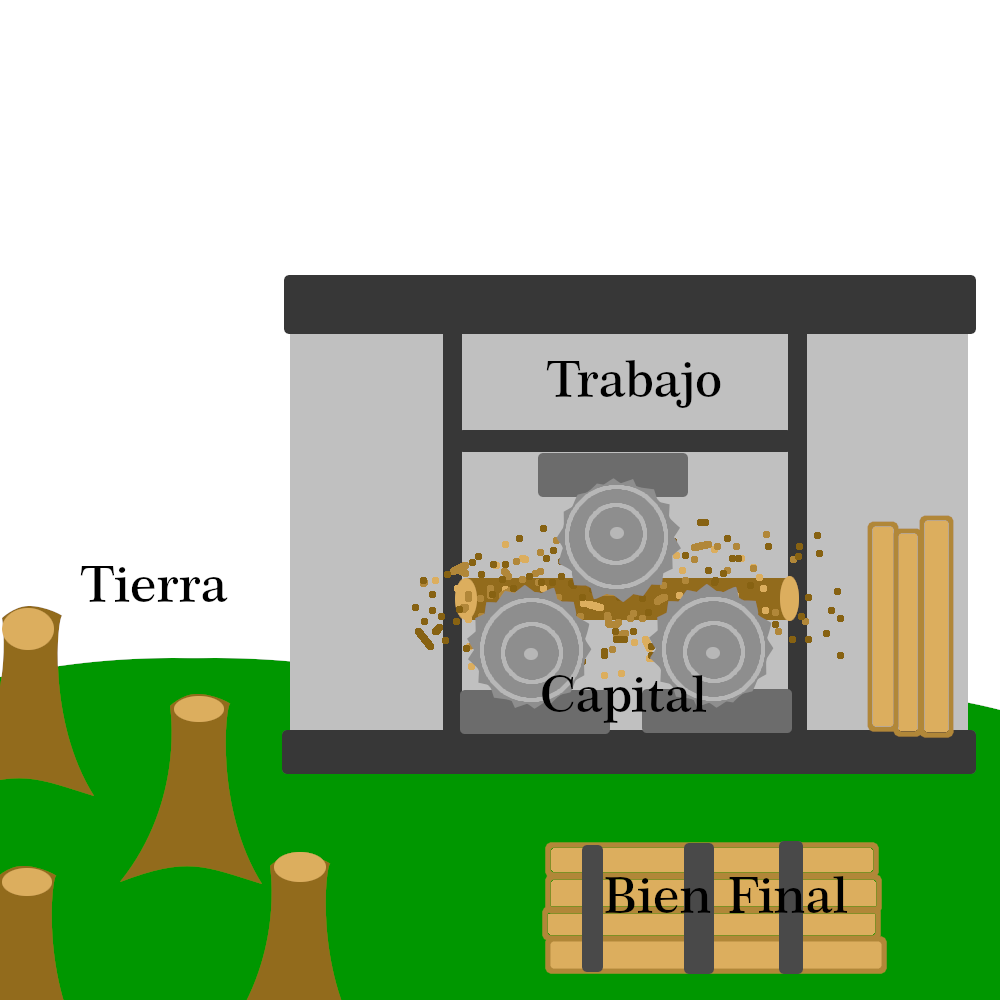
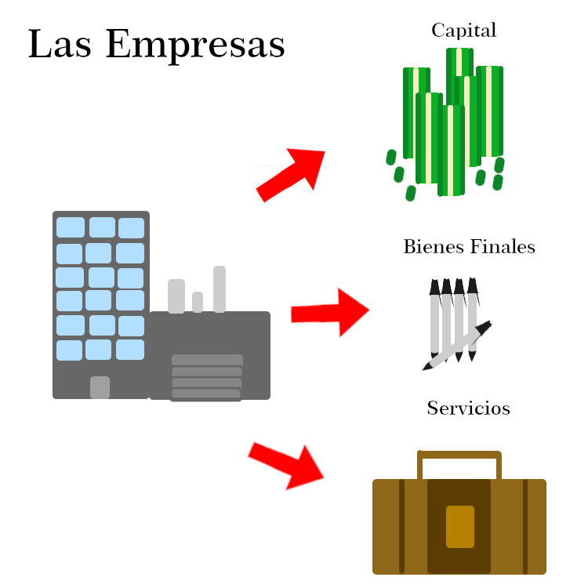
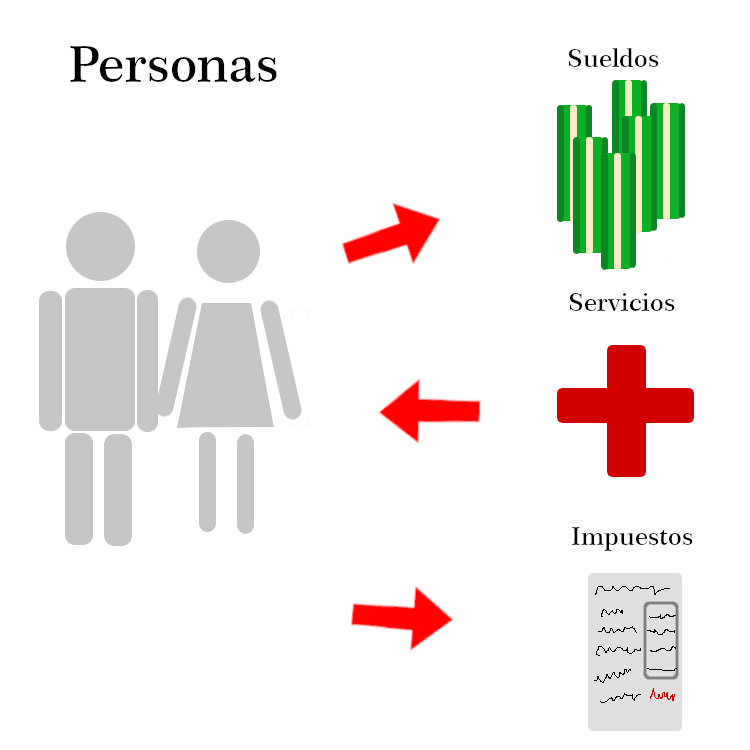
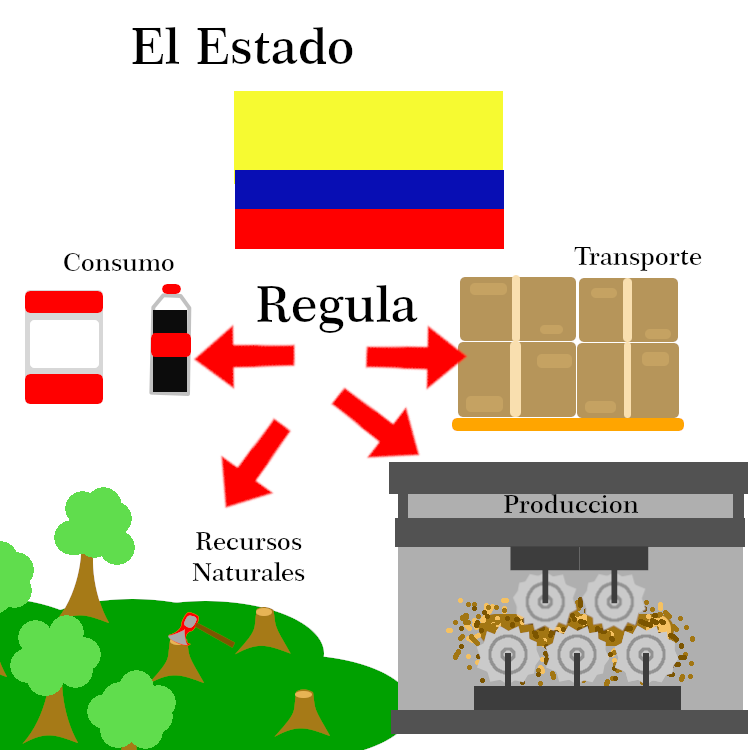
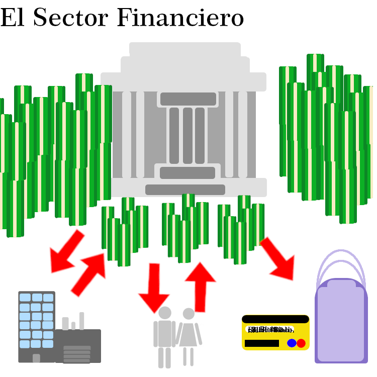
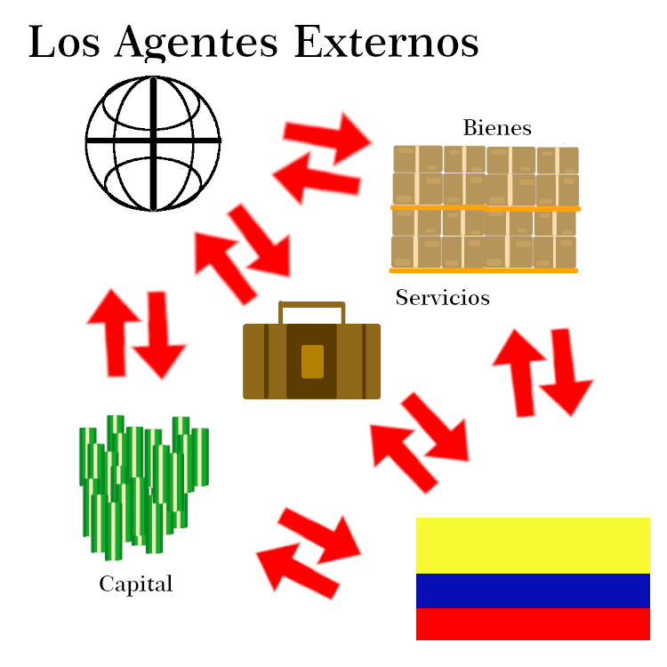

Los Bienes y los Servicios
Son cosas que buscan satisfacer las necesidades de los demas. Esto es hecho por Procesos Productivos realizados por
un Agente Económico. La diferencia entre ambos, es que los bienes son cosas que son tangiles, como productos comsumibles,
un auto, una casa o un lapiz. Mientras que los servicios, son eso servicios, o más especifico. Los servicios son acciones o
actividades que son hechas por una persona o cosa, cómo los diferentes trabajos que hay en el mercado.
Tipos de Bienes
Existen diferentes tipos de Bienes. Estos se separan en diferentes categorias dependiendo de su uso, funcionalidad, transformación
acceso, escasez o renta. Debemos tener en cuenta que un bien puede tener solo un tipo dentro de cada categoria, no puede tener dos o
más dentro de una. Las categorias son:
Grado de Escasez
Estos se tiene dependiendo de la escasez del bien, entre más escasez se tenga de este más caro y si se tiene extremadamente poco,
puede valer nada. Estos se dividen en:
Bienes Libres
-
Son los bienes ilimitados que todos pueden acceder y obtener, por ende no tienen o tienen muy poco valor. Cómo el aire, la
luz del día, lluvia. (Y eso en algunas partes del mundo).
Bienes Económicos
-
Son cosas que tienen un proceso de tiempo y costo de hacerlo, por eso se puede cotizar el valor de este trabajo a las personas.
Ademas, generalmente estos bienes son escasos o no suficientes para cubrir toda la demanda de estos, que en caso de la comida
es toda la humanidad. Pudiendo agregandose otra forma de cotizar a este producto. Y la mayoria de los otros bienes tienen el
concepto o base de esté.
Funcionlidad
Estos se dividen según si son para un consumo o para generar otros bienes. Los bienes de consumo se dividen entre duraderos y
perecedero, aún que también se puede agregar los bienes intermedios, que son bienes de consumo que se usan para crear otros bienes
de consumo, cómo la harina o los vegetales de una ensalada.
Bienes de Comsumo Duradero
-
Son productos, generalmente tecnologícos, que se pueden usar muchas veces en su vida de uso. Siendo generalmente un periodo
bastante largo y util, a no ser que la empresa que creo el producto tenga una practica muy cuestionable llamada "Obselencia Programada".
Bienes de Consumo Perecedero
-
Son productos que se pueden usar una sola vez, generalmente consumibles, como los diferentes productos de higiene personal.
Algunas personas piensan que estos deberían ser gratis, cosa muy cuestionable.
Bienes de Capital
-
Son bienes que se usan para hacer, generar, crear, obstener otros bienes o servicios. Como lo es un computador, un controlador,
unos LEDs y diferentes componentes electrónicos.
Transformación
Son bienes que o se pueden consumir de una vez, ya hechos, o son el material o Materia Prima para hacer estos bienes.
Acceso
Son bienes que pueden ser accedidos por todos, por sus dueños o solo por un negocio antes de usarlos.
Sectores de la Económia
Son sectores de la economía que nos suministran de bienes y servicios para nosotros. Estos se clasifican en 4 grupos:
El Sector Primario
Es el sector que obtiene principalmente bienes de la naturaleza, estos bienes no pasan por procesos muy rigurosos antes de ser
vendidos. De este sector se puede sacar las actividades de agricultura, ganaderia, mineria, explotación de los bosques, y la
pesca. Por como se ve, estas tienden a ser alejadas de las ciudades, para ser desarrolladas en sitios más rurales.
El Sector Secundario
Es el sector donde se usan las diferentes Materias Primas, para ser transformadas a otros productos que se puedan consumir,
cómo lo es hacer latas de atún. Estas tienden a ser puestas en cercania de las ciudades. Se pueden clasificar dependiendo de
su uso y tipo de materia prima en:
Pesada
-
Se usan grandes cantidades de Materia Prima, estas son procesadas para crear diferentes productos semi-elaborados,
que van a usar otras industrias, generalmente ligeras, para realizar los bienes finales. Generalmente estos procesos se necesitan
maquinarias & automatización muy grande.
Ligera
-
Se usan cantidades no tan grandes de Materia Prima, o almenos a comparación de la industria pesada. En esta industria
se generan los bienes finales con diferentes Materias Primas o productos semi-elaborados por otras industrias.
Semi-Ligera o de Equipo
-
Se usan cantidades mayores a la industria ligera, pero no tanta como la industria pesada. Lo que si necesitan es un alto nivel
de especificación, ya que estas crean diferentes herramientas, equipos o elementos, que pueden ser hechos para industrias o
para el consumidor.
El Sector Terciario
Es el sector que no generan bienes, sino servicios de todo tipo. Estos estan en todo el mundo, pero generalmente centrificados
en las cuidades.
El Sector Cuaternario
Es el sector de servicios & bienes que tienen un altisimo grado de especialización, como la tecnología, investigación,
la toma de decisiones y labores intelectuales. Se podría decir que se divide del Sector Terciario.
Estos son los Sectores principales, pero también se puede catalogar un ultimo sector:
El Sector Quintinario
Es el sector de diferentes servicios que no se tiene una renumeración o cotización por hacelo. Siembargo, estos servicios
son muy importantes para el funcionamiento de la economia. Cómo por ejemplo la liempieza del hogar, la protección civil no
privada, la educación, la cultura y la salud pública. Esté también se podría decir que es una división del Sector Terciario.
Factores de Producción
Es el proceso que debe tener una materia prima o producto semi-elaborado para volverse un bien final, para ser consumido.
Estos factores de producción se dividen en 4 grupos.
Tierra
-
Son los recursos naturales empleados en el proceso, no se deben tener en cuenta solo los bienes intermedios. Si no también
bienes como el espacio, la tierra para cultivar o aguas para pescar.
Trabajo
-
Es el tiempo y esfuerzo que emplea una persona en el trabajo de hacer un bien o un servicio.
Capital
-
Son los bienes que se tiene para crear otros tipos de bienes, cómo de unos tablones de madera, poder hacer un mueble de esta.
Tecnología
-
Son los conocimientos y técnicas que se pueden aplicar de una forma lógica y ordenada, permitiendo realizar o solucionar problemas
en un menor tiempo, con mayor eficacia & menor costo. Esta es muy reciente en incluirse en los sistemas económicos.
Agentes Económicos
En las economías se encuentran formas especificas de participación, llamandose estos roles Agentes Económicos.
Estos tienen diferentes servicios y bienes para el consumo doméstico o interno y para el uso externo o inverción, esto con el fin
de aumentar la capacidad de exportación y producción del País. Estos Agentes Económicos se dividen en:
Las Empresas
Son Agentes que estan en los 3 Sectores, y en parte de las divisiones del 3er Sector. Producen bienes finales, materia prima,
prestan servicios, esto dependiendo del sector donde este la empresa. Estos bienes y servicios son dados a la Personas y a el
Estado. También pagan salarios, intereses y dividendos a las personas, e invierten en su propía infrasestructura para mejoramiento
de la empresa o de la producción.
Las Personas, Civiles o Familias
Las personas estan relacionadas con las empresas y el estado. Recibiendo de las empresas sueldos, prestaciones sociales, bonificaciones y
horonarios. De otra persona. Y por parte del estado, a él se le pagan impuestos sobre la renta y el patrimonio, y servicios publicos.
Algunas de las personas usan sus ingresos para ahorrar y invertir, dando una circulación dentro las instituciones financieras.
El Estado & El Gobierno
El Estado acá en Colombia se asegura de tener un control en la económia, él cual puede intervenir en:
- Explotación de los recursos naturales
- Producción
- Distribución
- Utilización
- Consumo de Bienes
Esto se hace para tener un "ritmo económico de la sociedad en busca de una distribución justa y equitativa de los bienes y servicios".
El Sector Financiero
El Sector Financiero o bancos y entidades crediticias. Su labor es la de resguardar o ahorrar el dinero y dar creditos para
obtener el capital para impulsar la actividad económica.
Agentes Exógenos o Externos
Son todos aquellos agentes que interactuan con la economía del país mediante importaciones y exportaciones.
Bienes y Servicios Económicos.
| Curso |
1003 Jornada Tarde |
Estudiante |
Martín Steven Hernández Ortiz |
| Correo Electronico |
martinstevenhernandezortiz@gmail.com |
Fecha de Entrega |
04/03/2021 |
En esta tabla con las principales características de los bienes económicos, al frente de cada bien
elabora un dibujo sencillo representado sus características.
| Bienes Libres |
Son aquellos que por existir en gran cantidad pueden satisfacer necesidades ilimitadas. El aire o el
agua son ejemplos típicos de este tipo de bienes.
|
|
| Bienes Económicos |
Son escasos en relación a la necesidad y deseos que hay de ellos, son aquellos que existen en
cantidad limitada y además tienen un tiempo y un costo para producirlos. Cualquier bien por el que se tenga que pagar
es un ejemplo de este tipo de bien.
|
|
| Bienes de consumo duradero |
Pueden ser utilizados un gran número de veces a lo largo del tiempo. Los bienes duraderos son reutilizables, aunque
acabaran gastándose con el tiempo ejm. Una nevera o una lavadora.
|
|
| Bienes de consumo perecedero |
Tienen un corto tiempo de vida útil, se agotan rápidamente debido a su uso. Ejm. Jabones, champú.
|
|
| Servicios económicos |
Es un conjunto de actividades o actos que le permiten a las personas adquirir bienes o
satisfacer determinadas necesidades, los servicios financieros, el transporte entre
otros son ejemplos de servicios económicos.
|
|
| Bienes de capital |
Son utilizados para la producción de otro tipo de bienes. Ejm las máquinas de una fabrica
|
|
| Bienes públicos |
Es un tipo de bien que puede ser utilizado por cualquier miembro de una comunidad,
sin excluir a nadie, el alumbrado eléctrico, los parques con ejemplo de este tipo de bienes.
|
|
| Bienes privados |
Este tipo de bienes se caracteriza por ser opuestos a los bienes públicos, el uso por
parte de una persona excluye a los demás de su uso. Ejm. Carros, computadores personales, motos.
|
|
| Bienes finales |
Este tipo de bienes se caracterizan porque ya están listos para su consumo, la ropa y
los alimentos de diferente tipo son representativos de este tipo de bienes económicos.
|
|
Sectores de la Económia
| Curso |
1003 Jornada Tarde |
Estudiante |
Martín Steven Hernández Ortiz |
| Correo Electronico |
martinstevenhernandezortiz@gmail.com |
Fecha de Entrega |
04/03/2021 |
Basándote en tus conocimientos sobre el tema utiliza los conceptos que se presentan a
continuación para completar las oraciones correspondientes.
Lista de Palabras
- Mineria.
- Alimentos.
- Industrial.
- Comercio.
- Financieros.
- Sectores.
- Secundario.
- Terciario.
- Cuaternario.
- Agricultura.
- Primario.
- Servicios.
-
Para garantizar el correcto aprovechamiento de los recursos, bienes y servicios la economía se organiza en cuatro Sectores
-
El sector Primario de la economía se relaciona con la explotación, obtención y extracción de materias
primas y Alimentos corresponden a este sector la Agricultura, la ganadería, la Mineria, la pesca y la
explotación forestal.
-
El sector Secundario de la economía comprende el conjunto de actividades de carácter Industrial este
sector transforma industrialmente lo producido por el sector Primario. En Colombia este sector se encuentra
medianamente desarrollado, debido entre otros aspectos a la quiebra de muchas empresas por la crisis económica.
-
Las actividades económicas relacionadas con la administración pública, el transporte, el turismo, el Comercio,
los servicios prestados por los bancos llamados también servicios Financieros entre otros configuran el sector
Terciario de la economía.
-
El sector Cuaternario se caracteriza porque sus actividades se basan En las labores intelectuales y el
conocimiento científico y técnico.
-
La finalidad del sector terciario de la economía no es producir mercancías sino Servicios para la sociedad.
Factores de Producción Económica
| Curso |
1003 Jornada Tarde |
Estudiante |
Martín Steven Hernández Ortiz |
| Correo Electronico |
martinstevenhernandezortiz@gmail.com |
Fecha de Entrega |
04/03/2021 |
A partir de la lectura en la guía, responda en el cuaderno a las preguntas correspondientes.
¿Qué factores o medios de producción son mencionados en la lectura? Explica de manera sencilla cada uno.
Tierra
-
Son los recursos naturales que van a pasar a diferentes procesos de transformación para ser convertidos en un bien final.
Trabajo
-
Es el trabajo hecho por una persona o maquina para convertir diferentes materias primas o productos semi-elaborados
en un bien final.
Capital
-
Es el recurso ya sea de maquinaria, financieramente, entre otros. Destinada para la producción del bien final.
Tecnología (No en la lectura, pero muy importante hoy en día)
-
Son las técnicas y conocimientos que aplicados de una forma lógica y ordenada, permiten automatizar, mejorar, hacer más
barata o hacer mayores producciones del bien final.
¿Que es la producción en economía?
Es el proceso que debe pasar diferentes bienes y servicios para ser convertidos en bienes finales o servicios, para ser
vendidos en el mercado.
¿A qué sector de la economía se asocia el factor de producción tierra? ¿Qué recursos ofrece este factor o medio de producción?
El Sector Primario de la Economía. Diferentes recursos naturales sin mucho procesamiento, cómo minerales, madera,
diferentes materiales de origen animal y vegetal cómo la comida y pelajes.
¿Por qué el trabajo es un factor de producción importante?
Porqué es el proceso de que unos pedazos de madera, clavos y pegamento pasan a ser una bonita mesa de centro, para nuestras salas.
O más precisamente, porqué es el proceso que debe tener las diferentes materias primas o productos semi-elaborados, para ser
un bien final.
¿Cuál es la principal característica del sector secundario de la economía?
La insdustralización, que transforma diferentes materias primas y productos semi-elaborados a bienes finales.
¿Que es el capital? ¿Que tipos de capital existen según la lectura?
El capital son los recursos monetarios o otros recursos de una entidad, proyecto o empresa. Existen el dinero, construcciones,
terrenos, maquinaria, tecnología, entre otros. De estos existen diferentes tipos de capital.
En el cuadro de abajo elabore un dibujo con colores por cada uno de los medios de producción descritos
en la lectura (tierra, trabajo y capital).

Factores de Producción de una Fabrica de Madera, hecho por Martín Hernández.
Los Agentes Económicos
| Curso |
1003 Jornada Tarde |
Estudiante |
Martín Steven Hernández Ortiz |
| Correo Electronico |
martinstevenhernandezortiz@gmail.com |
Fecha de Entrega |
04/03/2021 |
Elabore un dibujo para cada agente económico mostrando en el mismo sus principales características.
Las Empresas

Las Empresas Cómo Agentes Económicos, hecho por Martín Hernández.
Las Personas y Familias

Las Personas y Familias Cómo Agentes Económicos, hecho por Martín Hernández.
El Estado y el Gobierno

El Estado Cómo Agentes Económicos, hecho por Martín Hernández.
El Sector Financiero

El Sector Financiero Cómo Agentes Económicos, hecho por Martín Hernández.
Agentes Exógenos

Los Agentes Exógenos Cómo Agentes Económicos, hecho por Martín Hernández.
Escriba el nombre de cuatro empresas a las que su familia le compre un bien o un servicio
- Claro (Servicio de Internet)
- Acuaducto (Servicio de Agua)
- Condesa (Servico de Electricidad)
- Platzi (Servicio de Educación Online)
¿Cómo se relacionan las personas y las familias con el Estado y las empresas? Básate en la lectura y en el
esquema presentado al inicio de la actividad.
Las Personas y familias debemos darle una parte de nuestro capital en forma de Impuestos, estos dependen generelmente
de nuestro salario, bienes y capital. Estos Impuestos son usados "para mejorar" nuestra calidad de vida y nuestro país.
Las Personas y familias tenemos una doble relación con las empresas, una donde nostros les damos nuestros servicios en algun puesto de
trabajo, esto acambio de una parte de los bienes que generamos para esta empresa. Al mismo tiempo con los bienes que nos dan,
generalmente dinero, podemos comprar un servicio o un bien a las empresas. Estas intentaran vender su servicio o producto
contra la competencia de empresas, tomando estrategias de marketing, publicidad y otros. Pero al final nosotros vamos a
elegir que vamos a comprar al final.
¿Qué funciones tiene el Estado en la economía?
Tiene que regular dentro de un margen la economía. La margen depende del sistema economico del país. Si se tiene un sistema de
impuestos, este debera usarlos para el uso de las personas que dieron estos mismos impuestos (personas, familias, empresas).
Esto puede ser arreglos a la infrasestructura, nueva infrasestructura, proyectos sociales, proyectos económicos, proyectos
tecnologícos, entre muchos otros.
El Estado también es muy importante que de una equidad de oportunidades, así para que las personas puedan dar lo mejor de
ellas para la economía, el país y para ellas mismas.